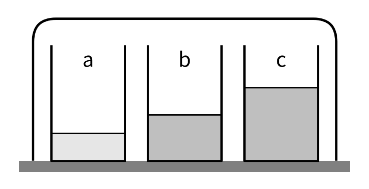

基礎題
下列何項屬於溶液的依數性質？
- (A) 導電度
- (B) 沸點
- (C) 凝固點
- (D) 滲透壓
- (E) 蒸氣壓
看答案與詳解
答案：(D)
(A) ✘ 導電度與離子種類、電荷有關。
(B)(C)(E) ✘ 沸點、凝固點、蒸氣壓本身與溶劑種類有關；屬依數性的是「上升度數」「下降度數」「下降量」。
(D) ✔ π＝iCRT
寒帶冬季道路積雪，常灑鹽以除雪，其原因是
- (A) 鹽溶解時放熱，使冰雪融化
- (B) 使水溶液的凝固點下降，雪易融化成水
- (C) 增加接觸表面積，可增加雪的融化速率
- (D) 鹽可吸收水分，使路面變乾
看答案與詳解
答案：(B)
CaCl2 0.05 mol 溶於 500 g 水中，所成溶液的電離度為 80%，此溶液的凝固點為（水的 Kf＝1.86℃／m）
- (A) −4.8℃
- (B) −0.48℃
- (C) −0.93℃
- (D) −0.62℃
看答案與詳解
答案：(B)
CaCl2 → Ca2+＋2Cl−：i＝1＋(3−1)α＝1＋2×0.8＝2.6
ΔTf＝1.86×0.10×2.6＝0.48℃ → −0.48℃ → (B)
若糖水與食鹽水具有相同的蒸氣壓，則下列哪些性質也會相同？（多選）
- (A) 沸點
- (B) 凝固點
- (C) 溶質莫耳分率
- (D) 重量莫耳濃度
- (E) 體積莫耳濃度
看答案與詳解
答案：(A)(B)
食鹽 i≒2，所以食鹽水的 Cm、CM、以化學式計的溶質莫耳分率都約為糖水的一半 → (C)(D)(E) ✘。
若將濃度為 0.20 m 的食鹽水稀釋至 0.10 m，則下列哪些性質會降低？（多選）
- (A) 蒸氣壓
- (B) 沸點
- (C) 凝固點
- (D) 滲透壓
- (E) 食鹽的溶解度
看答案與詳解
答案：(B)(D)
(A) ✘ 蒸氣壓下降量變小，蒸氣壓升高。
(B) ✔ 沸點上升度數變小，沸點降低。
(C) ✘ 凝固點下降度數變小，凝固點升高。
(D) ✔
(E) ✘ 溶解度只與溫度、溶質溶劑本性有關。
甲、乙、丙分別為含重量 1% 的 NaCl、1% 的 Na2SO4 及 1% 的 MgSO4 水溶液，假設皆完全解離。在 1 atm 時，三溶液開始沸騰的溫度由高至低的順序為何？（原子量：Na＝23.0，Cl＝35.5，S＝32.1，Mg＝24.3，O＝16.0）
- (A) 甲＞乙＞丙
- (B) 乙＞丙＞甲
- (C) 丙＞甲＞乙
- (D) 甲＞丙＞乙
看答案與詳解
答案：(A)
甲 NaCl：2／58.5＝0.0342
乙 Na2SO4：3／142.1＝0.0211
丙 MgSO4：2／120.4＝0.0166
粒子愈多沸點愈高：甲＞乙＞丙 → (A)
在 1.00 升水溶液中含有 1.42 克 Na2SO4（Na＝23，S＝32，O＝16，假設完全解離）。
(1) Na2SO4 的體積莫耳濃度為何？
(2) 該溶液在 20℃ 時的滲透壓為何？
看答案與詳解
答案：(1) 0.0100 M (2) 0.72 atm
(2) Na2SO4 → 2Na+＋SO42−，i＝3
π＝iCRT＝3×0.0100×0.082×293＝0.72 atm
在同一大氣壓下，下列哪一溶液的沸點最低？
- (A) 2 m C2H5OH(aq)
- (B) 1.5 m C2H5OH(aq)
- (C) 1 m NaCl(aq)
- (D) 0.1 m Na2SO4(aq)
看答案與詳解
答案：(A)
(C)(D) 為非揮發性電解質，沸點高於 100℃。
最低為 2 m 乙醇水溶液 → (A)
進階題
0.1 莫耳 AB2 完全溶於 0.1 公斤的水中，並解離為 A2+ 及 B− 離子，水溶液的凝固點為 −4.65℃。若水的莫耳凝固點下降常數為 1.86℃／m，則此化合物在水中的解離度為何？
- (A) 25%
- (B) 50%
- (C) 60%
- (D) 75%
- (E) 100%
看答案與詳解
答案：(D)
Cm＝0.1／0.1＝1 m
4.65＝1.86×1×(1＋2α) → 1＋2α＝2.5 → α＝0.75＝75% → (D)
有三種重量莫耳濃度均為 0.1 m 的水溶液：(甲) 食鹽（NaCl）水溶液、(乙) 尿素（CO(NH2)2）水溶液、(丙) 醋酸（CH3COOH）水溶液，則有關此三種溶液性質的比較，下列哪些正確？（醋酸的揮發性忽略不計）（多選）
- (A) 同壓下，溶液的沸點：(甲)＞(乙)＞(丙)
- (B) 同壓下，溶液的凝固點：(甲)＞(丙)＞(乙)
- (C) 同溫時，溶液的蒸氣壓：(乙)＞(丙)＞(甲)
- (D) 同溫時，溶液的導電度：(甲)＞(丙)＞(乙)
- (E) 同溫時，溶質的莫耳分率：(甲)＞(丙)＞(乙)
看答案與詳解
答案：(C)(D)
(A) ✘ 沸點：甲＞丙＞乙。
(B) ✘ 凝固點：乙＞丙＞甲。
(C) ✔ 粒子愈多蒸氣壓愈低。
(D) ✔ 強電解質＞弱電解質＞非電解質。
(E) ✘ Cm 相同，以化學式計的溶質莫耳分率相同。
取 0.10 克的 HF 溶於 50 克水中，所成溶液的凝固點為 −0.198℃，則 HF 的解離百分率為（F＝19；水的 Kf＝1.86℃／m）
- (A) 2.3%
- (B) 3.4%
- (C) 5.1%
- (D) 6.5%
看答案與詳解
答案：(D)
i＝ΔTf／(KfCm)＝0.198／(1.86×0.10)＝1.065
HF ⇌ H+＋F−：i＝1＋α → α＝0.065＝6.5% → (D)
一溶液含有 2.34 克氯化鋇與 150 克水，測其凝固點為 −0.356℃，則氯化鋇在水中的電離百分率為（Ba＝137，Cl＝35.5；水的 Kf＝1.86℃／m）
- (A) 86.6%
- (B) 77.6%
- (C) 80.2%
- (D) 70.2%
- (E) 96.6%
看答案與詳解
答案：(B)
i＝0.356／(1.86×0.0750)＝2.55
BaCl2：i＝1＋2α → α＝0.776＝77.6% → (B)
將 1.62 g 硝酸汞 Hg(NO3)2 溶於 500 g 水，所得溶液的凝固點下降 0.0558℃；將 5.42 g 氯化汞 HgCl2 溶於 500 g 水，所得溶液的凝固點為 −0.0744℃。下列敘述何者正確？（Hg＝200，N＝14，O＝16，Cl＝35.5；水的 Kf＝1.86℃／m）
- (A) 硝酸汞及氯化汞在水中均不解離
- (B) 硝酸汞及氯化汞在水中均解離
- (C) 硝酸汞在水中不解離，但氯化汞在水中解離
- (D) 硝酸汞在水中解離，但氯化汞在水中不解離
看答案與詳解
答案：(D)
HgCl2＝271：Cm＝(5.42／271)／0.500＝0.0400 m → i＝0.0744／(1.86×0.0400)＝1 → 不解離
→ (D)（HgCl2 是共價性強的分子，在水中幾乎不解離）
分子量同為 60 的甲、乙、丙、丁四物質各取 0.60 g，分別溶於 100 g 水，測得 1 atm 下的凝固點為：甲 −0.186℃，乙 −0.205℃，丙 −0.372℃，丁 −0.093℃。下列哪些正確？（水的 Kf＝1.86℃／m）（多選）
- (A) 乙、丙在水中會解離
- (B) 丙可能是強電解質
- (C) 甲是非電解質
- (D) 丁在水中解離成兩個離子
- (E) 丁在水中有聚合的現象
看答案與詳解
答案：(A)(B)(C)(E)
i：甲＝1，乙＝1.10，丙＝2.0，丁＝0.5
(A) ✔ 乙、丙 i＞1。
(B) ✔ 丙 i＝2，可能是完全解離的 AB 型強電解質。
(C) ✔
(D) ✘ 丁 i＜1。
(E) ✔ i＝0.5，相當於完全二聚。
1.0 m 的下列非揮發性弱電解質：(1) AB (2) A2B (3) AB2 (4) A2B2，四者在水溶液中均解離成單原子離子，且解離度相同，則下列哪些正確？（多選）
- (A) 凝固點：(1)＞(2)＞(3)＞(4)
- (B) 沸點：(2)＝(3)
- (C) 同溫時蒸氣壓：(1)＞(2)＝(3)＞(4)
- (D) 凝固點下降度數：ΔT2＋ΔT3＝ΔT1＋ΔT4
看答案與詳解
答案：(B)(C)(D)
(A) ✘ (2) 與 (3) 凝固點相同。
(B) ✔
(C) ✔ 粒子愈多蒸氣壓愈低。
(D) ✔ (1＋2α)＋(1＋2α)＝(1＋α)＋(1＋3α)＝2＋4α
K2[CoCl4] 溶於水時，藍色的 [CoCl4]2− 逐漸變成桃紅色的 [Co(H2O)6]2+，反應式為：K2[CoCl4](aq)＋6H2O ⇌ 2K+(aq)＋[Co(H2O)6]2+(aq)＋4Cl−(aq)。設 [CoCl4]2− 未變化前溶液的沸點為 100.156℃，完全變化後，沸點應為若干℃？
- (A) 100.156
- (B) 100.208
- (C) 100.260
- (D) 100.364
看答案與詳解
答案：(D)
變化後：2K+＋[Co(H2O)6]2+＋4Cl−，7 個粒子（水的消耗可忽略）。
ΔTb＝0.156×7／3＝0.364℃ → 100.364℃ → (D)
在室溫，將 1.17 克氯化鈉加入裝有 400 克水的燒杯中，充分攪拌，待完全溶解後，置燒杯於溫度為 −0.372℃ 的冰箱中。經長時間後，此溶液最多能析出約幾克的冰？（水的 Kf＝1.86℃／m；Na＝23，Cl＝35.5）
- (A) 100
- (B) 200
- (C) 240
- (D) 320
- (E) 360
看答案與詳解
答案：(B)
析出冰使溶液變濃，直到溶液的凝固點降到 −0.372℃：
0.372＝1.86×0.040／W → W＝0.200 kg
析出冰＝400−200＝200 g → (B)
若用（甲）葡萄糖、（乙）溴化鎂、（丙）醋酸、（丁）氯化鈉等四種化合物，在 25℃ 製備相同滲透壓且等體積的溶液時，所需質量由大至小排序，下列哪一選項正確？（原子量：Br＝80，Mg＝24，Na＝23，Cl＝35.5）
- (A) （甲）＞（乙）＞（丙）＞（丁）
- (B) （乙）＞（甲）＞（丁）＞（丙）
- (C) （甲）＞（丁）＞（丙）＞（乙）
- (D) （乙）＞（甲）＞（丙）＞（丁）
- (E) （甲）＞（乙）＞（丁）＞（丙）
看答案與詳解
答案：(A)
甲 C6H12O6：180／1＝180
乙 MgBr2：184／3≒61.3
丙 CH3COOH：弱酸 i 略大於 1 → 略小於 60
丁 NaCl：58.5／2≒29.3
甲＞乙＞丙＞丁 → (A)
大考／素養題
將各為 1.0 莫耳的 Ba(OH)2、NaOH、BaSO4 及 Na2SO4 固體，分別置入 1.0 升的水中。試問哪一個溶液的蒸氣壓最高？
- (A) Ba(OH)2
- (B) NaOH
- (C) BaSO4
- (D) Na2SO4
看答案與詳解
答案：(C)
其餘皆可溶的強電解質，粒子多，蒸氣壓下降多。
已知在 37℃ 時，某溶液的滲透壓約相當於 0.2 M KI 水溶液的滲透壓，則此溶液的滲透壓（atm）最接近下列哪一數值？
- (A) 5.1
- (B) 7.7
- (C) 10.2
- (D) 12.8
- (E) 15.4
看答案與詳解
答案：(C)
π＝iCRT＝2×0.2×0.082×310＝10.2 atm → (C)
在室溫，下列水溶液中，何者的滲透壓最高？
- (A) 3.0×10−3 M HCl
- (B) 4.0×10−3 M NaCl
- (C) 5.0×10−3 M CaCl2
- (D) 6.0×10−3 M CH3COOH
- (E) 7.0×10−3 M C6H12O6
看答案與詳解
答案：(C)
(A) 2×3.0＝6.0（×10−3 M）
(B) 2×4.0＝8.0
(C) 3×5.0＝15
(D) 弱酸，略大於 6.0
(E) 7.0
最大為 CaCl2 → (C)
以下五種液態物質，甲：乙醇，乙：純水，丙：1% 葡萄糖水溶液，丁：1% 酒精水溶液，戊：1% 食鹽水溶液，則下列哪些正確？（多選）
- (A) 同溫時蒸氣壓：戊＞丙＞乙＞丁＞甲
- (B) 沸點：戊＞丙＞乙＞丁＞甲
- (C) 凝固點：乙＞丙＞丁＞戊
- (D) 重量莫耳濃度：丁＞戊＞丙
- (E) 溶質莫耳分率：丙＞戊＞丁
看答案與詳解
答案：(B)(C)(D)
丙 葡萄糖 1／180 → 0.056 m
丁 乙醇 1／46 → 0.22 m（揮發性溶質，蒸氣壓反而高於純水）
戊 NaCl 1／58.5 → 0.17 m，粒子 0.35 m
(A) ✘ 蒸氣壓應為 甲＞丁＞乙＞丙＞戊。
(B) ✔ 與蒸氣壓順序相反。
(C) ✔ 凝固點下降只看粒子濃度：乙 0＜丙 0.056＜丁 0.22＜戊 0.35。
(D) ✔ 0.22＞0.17＞0.056
(E) ✘ 溶質莫耳數 丁＞戊＞丙，莫耳分率也是 丁＞戊＞丙。
於 37℃，三個足夠大的燒杯 a、b、c 置於密閉容器中（如下圖），分別裝入 100 g、200 g、300 g 水後，於 b 杯中加入 KNO3 10.1 g，於 c 杯中加入 C6H12O6 32.4 g。經長時間放置達平衡後，測得 c 杯中有水 300 g。（KNO3＝101，C6H12O6＝180）

(1) 平衡後 a 杯中有水若干 g？
(2) KNO3 的解離度為何？
(3) 取出人體的紅血球（滲透壓為 7.5 atm）置入平衡後 b 杯的 KNO3 溶液中，紅血球會有何現象？（溶液視為稀薄溶液，密度同水）
看答案與詳解
答案：(1) 0 g (2) 80% (3) 皺縮
(2) 水共 600 g，c 杯 300 g → b 杯 300 g。平衡時 b、c 粒子濃度相等：
c：(32.4／180)／0.300＝0.60 m → b 粒子＝0.60×0.300＝0.18 mol
KNO3 0.10 mol，i＝1.8＝1＋α → α＝0.80＝80%
(3) π≒0.60×0.082×310＝15 atm＞7.5 atm，高張 → 紅血球皺縮。
醋酸（CH3COOH＝60）在不同溶劑中的行為不同：
(1) 1% 醋酸水溶液的凝固點為 −0.318℃，求醋酸在水中的近似分子量。（水的 Kf＝1.86℃／m）
(2) 在苯（Kf＝4.90℃／m）中，1% 醋酸溶液的凝固點下降 0.441℃，求醋酸在苯中的近似分子量。
(3) 試解釋兩者的差異，並算出醋酸在水中的解離度及在苯中的偶合度。
看答案與詳解
答案：(1) 59 (2) 112 (3) 解離度約 1.6%，偶合度約 93%
(1) Cm＝0.318／1.86＝0.171 m → n＝0.171×0.099＝0.0169 mol → M表觀≒59.1
(2) Cm＝0.441／4.90＝0.090 m → n＝0.00891 mol → M表觀≒112
(3) 在水中部分解離，粒子變多，表觀分子量偏小：i＝60／59.1＝1＋α → α≒0.016（1.6%）
在苯中以氫鍵形成二聚物，粒子變少，表觀分子量偏大：2CH3COOH ⇌ (CH3COOH)2，i＝1−β／2＝60／112 → β≒0.93（93%）
0.1 m 的下列各水溶液：①酒精 ②葡萄糖 ③蔗糖 ④NaCl ⑤Na2SO4，依下列性質由大到小排列：
(1) 沸點
(2) 凝固點
(3) 同溫時溶液的蒸氣壓
(4) 重量百分率濃度
看答案與詳解
答案：(1)⑤＞④＞②＝③＞① (2)①＝②＝③＞④＞⑤ (3)①＞②＝③＞④＞⑤ (4)③＞②＞⑤＞④＞①
(1) 沸點：酒精水溶液蒸氣壓較高，沸點最低 → ⑤＞④＞②＝③＞①
(2) 凝固點只看粒子數（揮發性溶質也適用）→ ①＝②＝③＞④＞⑤
(3) 蒸氣壓：酒精本身也貢獻蒸氣壓，最高 → ①＞②＝③＞④＞⑤
(4) 同 Cm，式量愈大重量百分率愈大：蔗糖 342＞葡萄糖 180＞Na2SO4 142＞NaCl 58.5＞酒精 46 → ③＞②＞⑤＞④＞①